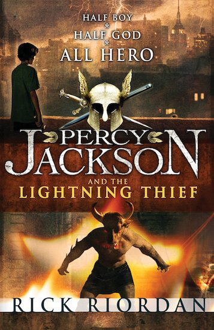
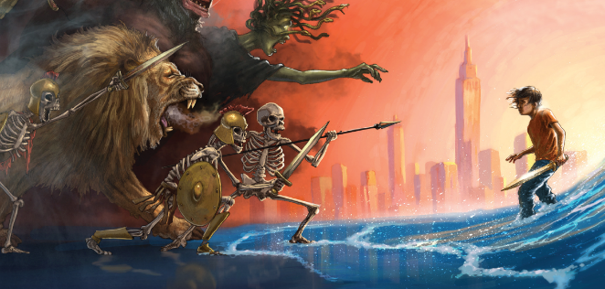

Once Upon a Page
Once Upon a Page

A Strange Field Trip

Percy admits that he didn’t want to be a half-blood. He warns the reader that if they recognize themselves in the story to follow, they should stop reading immediately—danger is right around the corner. Percy introduces himself: he’s 12 years old and a boarding student at Yancy Academy, a school for troubled kids. Though Percy has always been “troubled,” things get really bad on the trip to the Metropolitan Museum of Art to look at ancient Greek and Roman stuff. Percy has high hopes, since Mr. Brunner, the cool Latin teacher, is leading the trip. Percy seems to always get in trouble on field trips, but he vows to be good. He ignores Nancy Bobofit’s bullying—she throws sandwich bits at Grover, Percy’s best friend.
Mr. Brunner leads the class through the galleries. They stop at a stele (a grave marker), and Percy tries to listen to Mr. Brunner’s explanation, but kids talking make it hard to hear. The evil math teacher, Mrs. Dodds, gives Percy a look whenever he tells a kid to shut up. She’s hated Percy since she arrived midway through the year, and Percy suspects she’s not human. Nancy continues to talk and finally, Percy tells her loudly to stop. Everyone laughs, and Mr. Brunner asks Percy to explain the pictures on the stele. Percy explains that it’s the Titan Kronos eating his kids, but someone hid baby Zeus and when Zeus grew up, he tricked Kronos into vomiting up the other children. Then there was a fight and the gods won.
When Nancy mumbles loudly that none of this applies to real life, Mr. Brunner asks Percy to explain why it does matter. Percy doesn’t know. Disappointed, Mr. Brunner finishes the story of what happened: Zeus and the other gods defeated Kronos, sliced him up, and threw him into Tartarus in the Underworld. Then, Mr. Brunner sends everyone outside for lunch but calls Percy back. Mr. Brunner insists that Percy must learn why all of this is important for real life. Percy wants to be angry about how hard Mr. Brunner pushes him, since Percy has dyslexia and ADHD and struggles to memorize and spell. Percy mumbles that he’ll try harder.
Outside, there’s a big storm brewing—Percy figures it’s global warming. He gladly gives Grover his apple and thinks longingly of Mom, who lives close by. As Mr. Brunner parks his wheelchair and starts eating, Nancy walks by and dumps her lunch in Grover’s lap. Percy tries to control his temper but somehow—he doesn’t remember how—Nancy ends up in the fountain. Mrs. Dodds appears immediately, and kids whisper that the water grabbed Nancy. Mrs. Dodds asks Percy to come with her. Grover tries to insist that he pushed Nancy, but Mrs. Dodds just smirks. Percy turns to Grover and when he looks back, Mrs. Dodds is at the top of the stairs. Percy figures this is just part of his ADHD; lapses like this happen often.